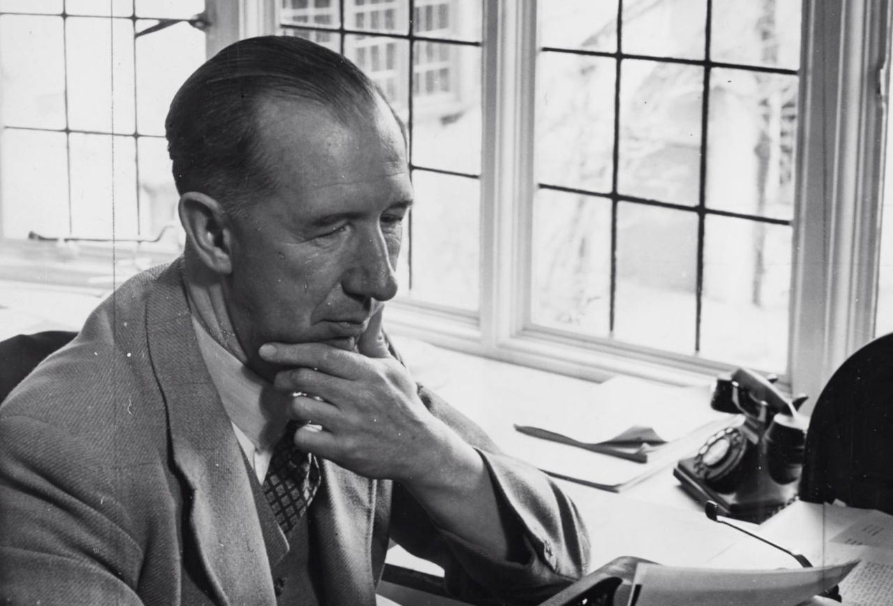
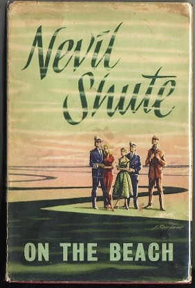

Невил Шют Норвей

- Родился 17 января 1899
- Место рождения Лондон
- Умер 12 января 1960
- Место смерти Мельбурн
Произведения:
- «Одинокая дорога»
-
«Крысолов»
- «Пастораль»
- «Совершенно секретно»
- «Нет пути»
- «Город как Элис»
- «Сдвиг по фазе»
- «В сезон дождей»
-
«На берегу»
- Место смерти Мельбурн
Обложка моей любимой книги:
